Workflow approvativi Obblighi di Dichiarazione
Il portale delle Smart Guide è uno spazio digitale che raccoglie risorse pratiche e aggiornate in un unico ambiente intuitivo. Strumenti chiari e organizzati per organizzarti e trovare subito ciò che ti serve.
01.
Punti di accesso per valutare gli Obblighi di Dichiarazione
Una panoramica sui punti di accesso per valutare gli Obblighi di Dichiarazione.
Punti di accesso per valutare gli Obblighi di Dichiarazione
Punti di accesso per valutare gli Obblighi di Dichiarazione
Dashboard
È possibile accedere agli Obblighi di Dichiarazione sia tramite la sezione dedicata, sia tramite le azioni disponibili per ciascuna attività presente nel tab "Obblighi di Dichiarazione".
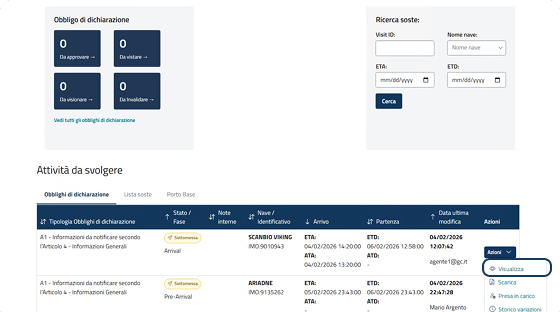
Notifiche
Attraverso la sezione delle notifiche è possibile accedere al dettaglio dell'Obbligo di Dichiarazione sottomesso per la valutazione.
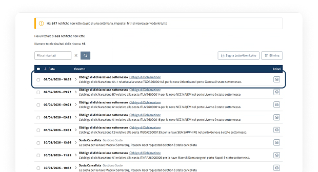
Ricerca soste
Nella ricerca sia nel tab "Lista soste" che nel tab "Aggiornamenti soste" sarà possibile visualizzare e accedere alla sosta e al rispettivo Obbligo di Dichiarazione per la valutazione.
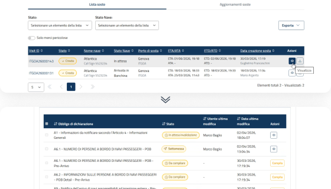
Per gli Obblighi di Dichiarazione che prevedono un'approvazione da parte dell'utente, sarà prevista nel tab "Azioni" la presa in carico. Modalità Generali, pag. 8
02.
Valutazione Obblighi di Dichiarazione di tipo "Istanza"
Una panoramica sulla valutazione degli Obblighi di Dichiarazione di tipo "Istanza".
Valutazione Obblighi di Dichiarazione di tipo "Istanza"
Azioni disponibili post "Sottomissione"
A seguito di sottomissione di un Obbligo di Dichiarazione da parte del Declarant, l'autorità marittima ha la possibilità di procedere nella valutazione tramite le seguenti azioni:
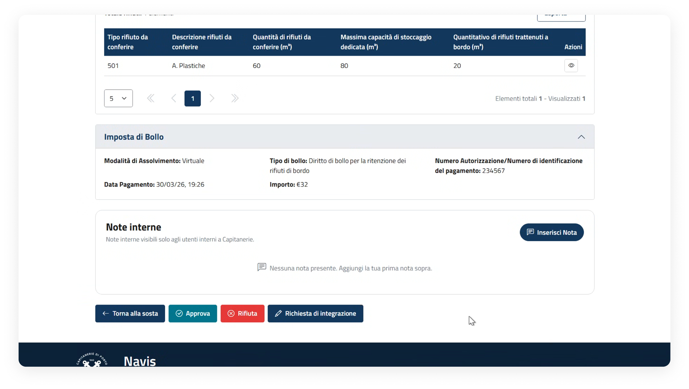
L'utente, dopo aver verificato i dati dell'Obbligo di Dichiarazione, può decidere di approvarlo.
L'utente, dopo aver verificato i dati dell'Obbligo di Dichiarazione, può decidere di rifiutarlo.
L'utente, dopo aver verificato i dati dell'Obbligo di Dichiarazione, può decidere se richiederne l'integrazione.
03.
Valutazione Obblighi di Dichiarazione di tipo "Comunicazione"
Una panoramica sulla valutazione degli Obblighi di Dichiarazione di tipo "Comunicazione".
Valutazione Obblighi di Dichiarazione di tipo "Comunicazione"
Azioni disponibili post "Sottomissione"
A seguito di sottomissione di un Obbligo di Dichiarazione da parte del Declarant, l'autorità marittima ha la possibilità di procedere nella valutazione tramite le seguenti azioni:
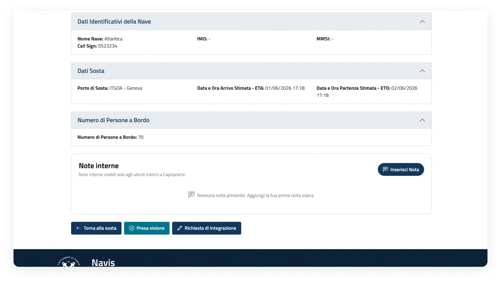
L'utente, dopo aver verificato i dati dell'Obbligo di Dichiarazione, può procedere con la presa visione.
Dopo che l'utente ha preso visione dell'Obbligo di Dichiarazione lo stato passa in "Visionata".
L'utente, dopo aver verificato i dati dell'Obbligo di Dichiarazione, può decidere se richiederne l'integrazione.
04.
Apposizione visto Obblighi di Dichiarazione di tipo "Comunicazione"
Una panoramica sul flusso di apposizione visto di un Obbligo di Dichiarazione di tipo "Comunicazione".
Apposizione visto Obblighi di Dichiarazione di tipo "Comunicazione"
Azioni disponibili post "Sottomissione"
A seguito di sottomissione di un Obbligo di Dichiarazione da parte del Declarant, l'autorità marittima ha la possibilità di procedere nella valutazione tramite le seguenti azioni:
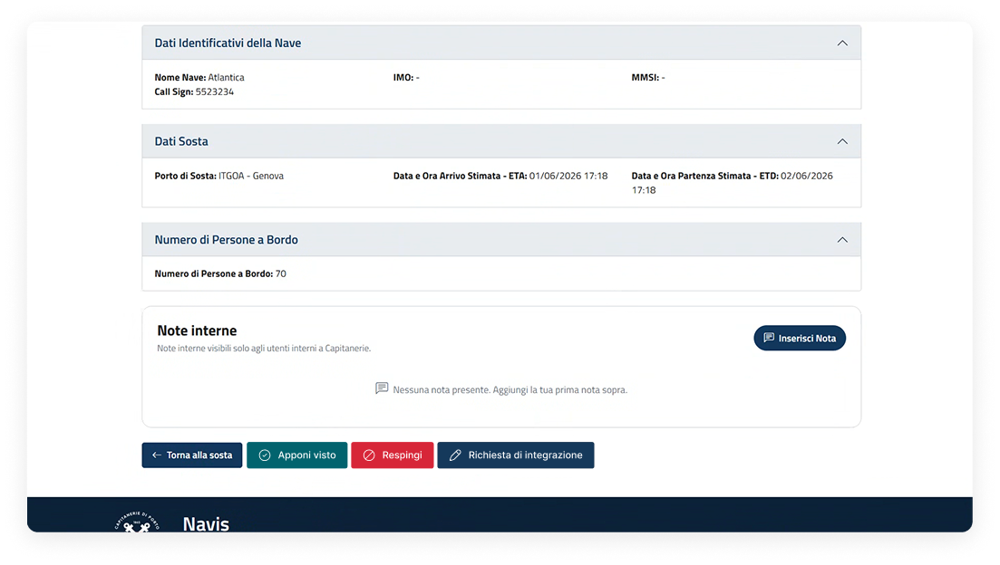
L'utente, dopo aver verificato i dati dell'Obbligo di Dichiarazione, può procedere con l'apposizione del visto.
Dopo che l'utente ha apposto il visto all'Obbligo di Dichiarazione lo stato passa in "Vistata".
L'utente, dopo aver verificato i dati dell'Obbligo di Dichiarazione, può decidere se respingerlo.
L'utente, dopo aver verificato i dati dell'Obbligo di Dichiarazione, può decidere se richiederne l'integrazione.
05.
Valutazione di Obblighi di Dichiarazione di tipo "Accosto" con terminalista
Una panoramica sulla valutazione di Obblighi di Dichiarazione di tipo "Accosto" con terminalista.
Valutazione di Obblighi di Dichiarazione di tipo "Accosto" con terminalista
Azioni disponibili per valutare gli Obblighi di Dichiarazione di tipo "Accosto": apposizione visto da parte del terminalista
Questo step viene attivato nel caso in cui, in fase di creazione Obbligo di Dichiarazione che prevedono l'indicazione della struttura portuale di accosto, la struttura portuale indicata abbia il terminalista, abbia come attributi terminal e banchina non pubblici e il porto sia gestito da Autorità di Sistema Portuale.
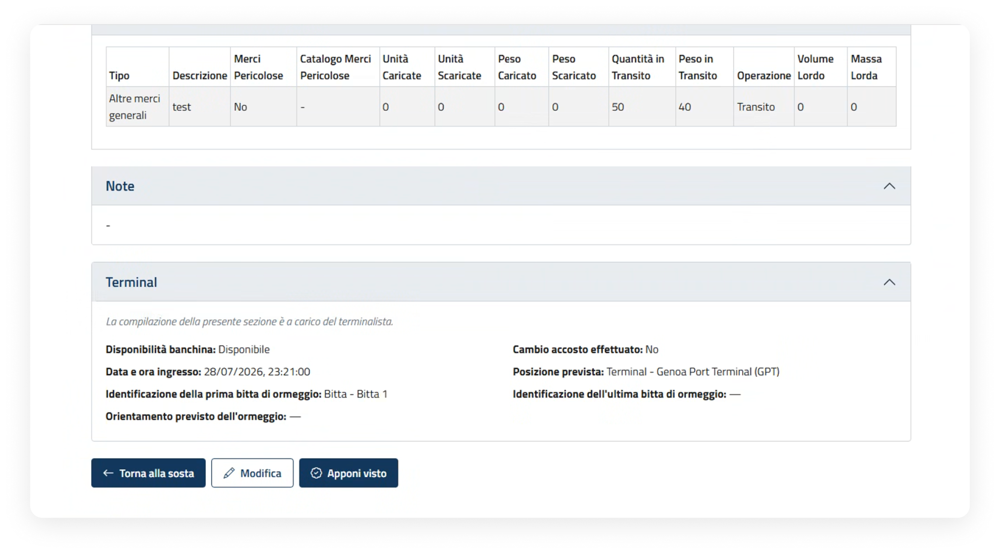
L'utente, dopo aver verificato i dati presenti nell'Obbligo di Dichiarazione, nella sezione "Terminal", può procedere con la modifica dei dati.
L'utente, dopo aver verificato i dati presenti nell'Obbligo di Dichiarazione, può decidere se apporre il visto.
Valutazione di Obblighi di Dichiarazione di tipo "Accosto" con terminalista
Azioni disponibili per valutare gli Obblighi di Dichiarazione di tipo "Accosto": apposizione visto da parte del terminalista
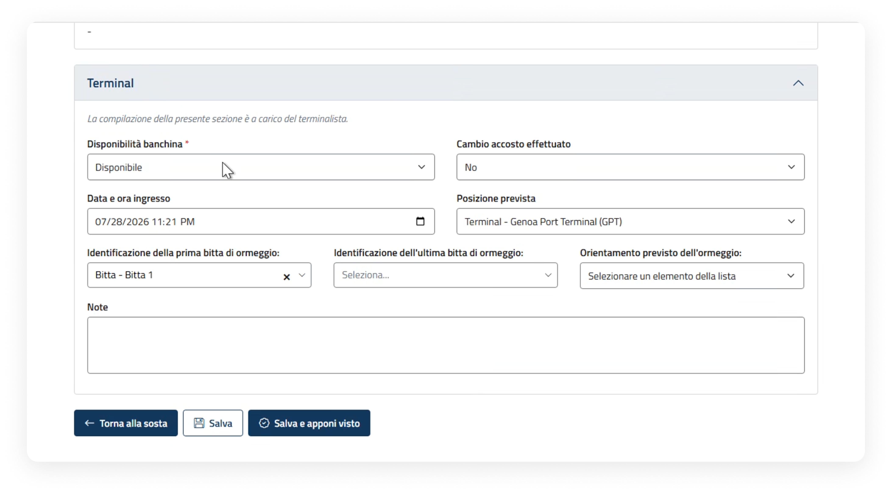
L'utente, dopo aver modificato i dati presenti nell'Obbligo di Dichiarazione, nella sezione "Terminal", può procedere al salvataggio.
L'utente, dopo aver modificato i dati presenti nell'Obbligo di Dichiarazione, nella sezione "Terminal", può procedere al salvataggio e contestuale apposizione visto.
Valutazione di Obblighi di Dichiarazione di tipo "Accosto" con terminalista
Azioni disponibili per valutare gli Obblighi di Dichiarazione di tipo "Accosto": valutazione da parte di CdP locale dopo apposizione visto da parte del terminalista
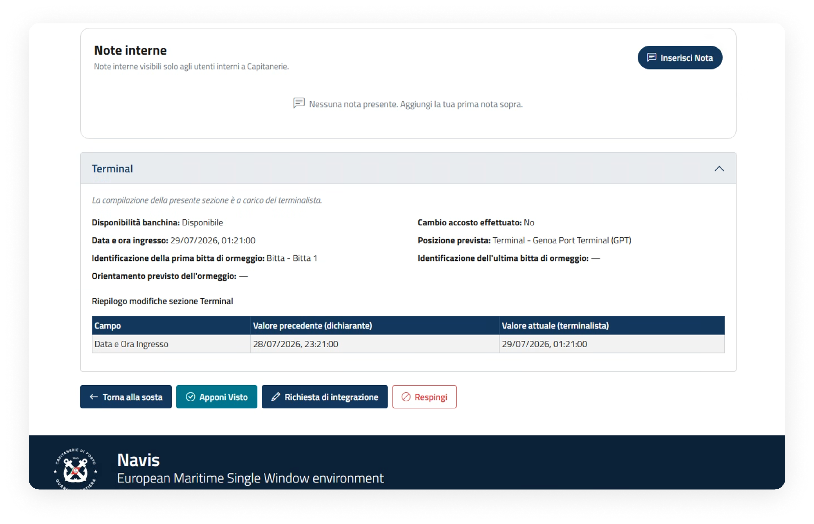
L'utente, dopo aver verificato i dati dell'Obbligo di Dichiarazione, e nello specifico la sezione "Terminal" vistata dal terminalista, può procedere con l'apposizione del visto.
Dopo che l'utente ha apposto il visto all'Obbligo di Dichiarazione lo stato passa in "Vistata".
L'utente, dopo aver verificato i dati dell'Obbligo di Dichiarazione, può decidere se richiederne l'integrazione.
L'utente, dopo aver verificato i dati dell'Obbligo di Dichiarazione, può decidere se respingerlo.
06.
Revoca Obbligo di Dichiarazione
Una panoramica sulla revoca di un Obbligo di Dichiarazione che si trova nello stato "Approvata" o "Vistata".
Revoca Obbligo di Dichiarazione
Passaggi per revocare un Obbligo di Dichiarazione
L'Operatore di Capitaneria può revocare un Obbligo di Dichiarazione "Vistato" o "Approvato" tramite i seguenti passaggi. Al termine l'Obbligo assumerà lo stato "Revocato".
Dettaglio e pulsante
Per revocare l'Obbligo di Dichiarazione cliccare il pulsante "Revoca Obbligo di Dichiarazione".
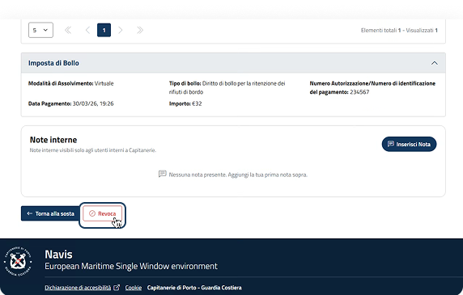
Aggiunta della motivazione della revoca
Il sistema mostra una finestra per inserire obbligatoriamente il motivo della revoca dell'Obbligo di Dichiarazione; compilare e confermare.
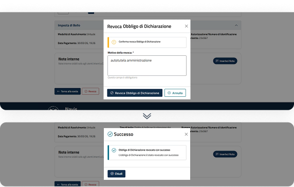
Dettaglio e stato
Dopo aver revocato l'Obbligo di Dichiarazione, nel dettaglio lo stesso assumerà lo stato "Revocato".
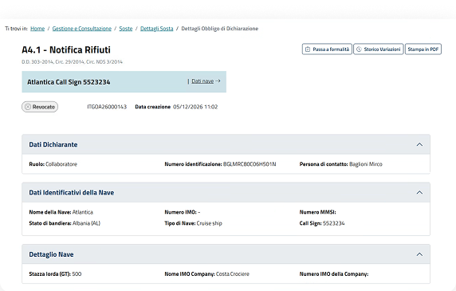
07.
Valutazione richiesta di invalidazione
Una panoramica sulla valutazione della richiesta di invalidazione di un Obbligo di Dichiarazione.
Valutazione richiesta di invalidazione
Punti di accesso per valutare la richiesta di invalidazione
Lista attività dalla dashboard
È possibile visualizzare le proposte tramite le azioni disponibili per ciascuna attività presente nella dashboard nel tab "Obblighi di Dichiarazione".
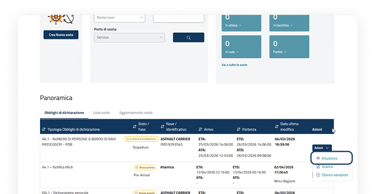
Notifiche
Attraverso la sezione delle notifiche è possibile accedere al dettaglio dell'Obbligo di Dichiarazione "In attesa di invalidazione".
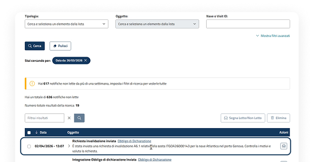
Ricerca soste
Nella ricerca sia nel tab "Lista soste" che nel tab "Aggiornamenti soste" sarà possibile visualizzare e accedere all'Obbligo di Dichiarazione "In attesa di invalidazione".
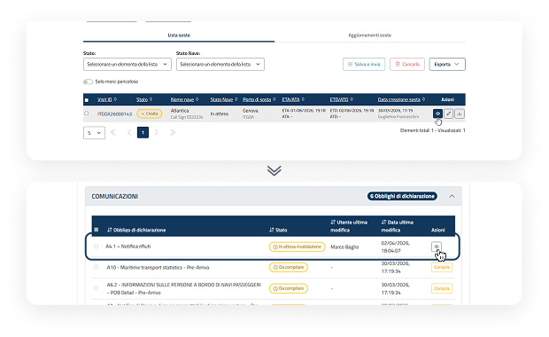
Valutazione richiesta di invalidazione
Azioni disponibili per valutare la richiesta di invalidazione
A seguito di invio della richiesta di invalidazione da parte del Declarant, l'autorità marittima ha la possibilità di procedere nella valutazione tramite le seguenti azioni:
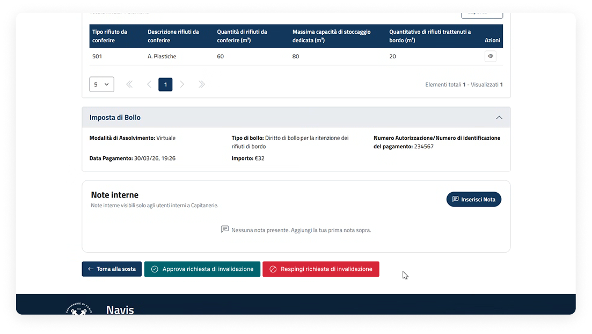
L'utente, dopo aver preso visione della richiesta di invalidazione, può decidere se approvarla. L'Obbligo di Dichiarazione assumerà lo stato "Invalidata".
L'utente, dopo aver preso visione della richiesta di invalidazione, può decidere se respingerla. L'Obbligo di Dichiarazione assumerà lo stato in cui si trovava prima della richiesta di invalidazione.